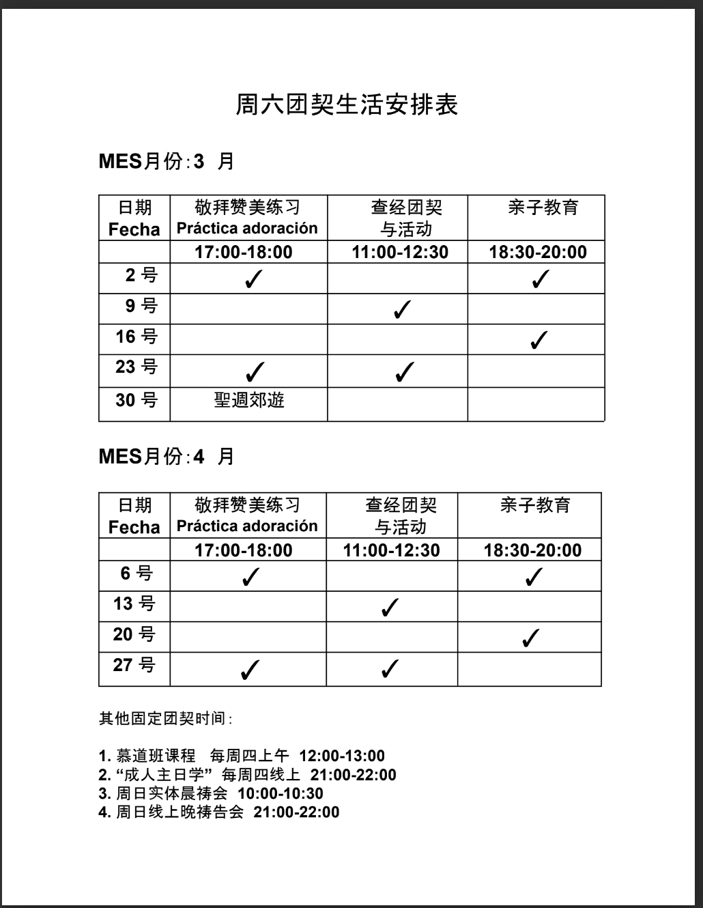

主日崇拜
聚会时间：周日11:00 - 13:00开始
聚会地点：主堂（中文），副堂（西语）。每个月第四个主日，中文西语联合崇拜，地点为主堂。
出差的弟兄姊妹，或是其它原因不能来到教会实体聚会的弟兄姊妹，可以zoom线上聚会。错过聚会的弟兄姊妹，可以到YouTube上的 马德里希望泉华人宣道会（ACyM Río de Esperanza）频道观看录制的视频 。
成人主日学
每个主日崇拜结束，休息半个小时后开始，地点仍在主堂。
儿童主日学
6岁以下：玛丽姊妹带领
6岁以上：Isa姊妹带领
查经班
每个周周四晚上9:00钟开始，zoom线上聚会。目前查考内容为《使徒行传》，主讲人：刘传道。
团契
